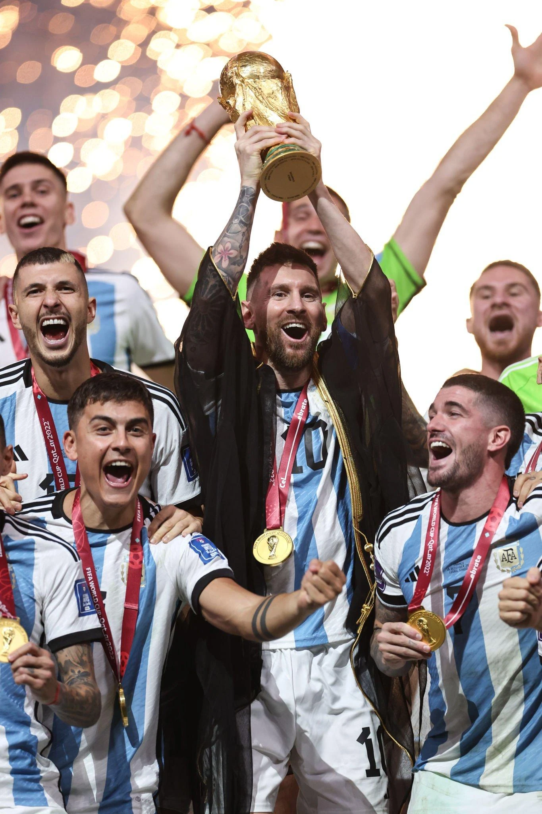
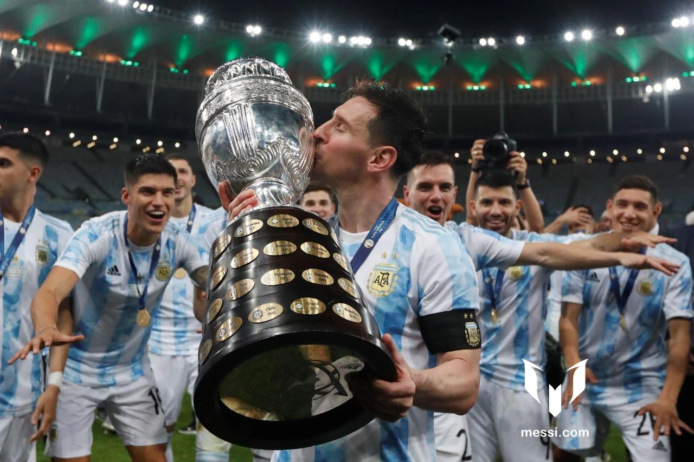

Argentina
Le principali vittorie di Messi con la nazionale.

Le vittorie
-
2005
Mondiale Under 20
La prima grande vittoria internazionale.
-
2008
Oro olimpico
Il titolo conquistato ai Giochi di Pechino.
-
2021
Copa América
La vittoria al Maracanã, in Brasile.
-
2022
Finalissima
Il successo contro l’Italia a Wembley.
-
2022
Coppa del Mondo
Il trionfo contro la Francia a Lusail.
-
2024
Copa América
Il secondo titolo continentale.
Copa América 2021
La vittoria al MaracanãIl primo grande titolo con la nazionale maggiore
Nel 2021 l’Argentina conquista la Copa América in Brasile. Per Messi è il primo grande successo con la nazionale maggiore, dopo le vittorie Under 20 e olimpica.


Qatar 2022
Messi segna due gol nella finale contro la Francia. Dopo il 3–3 dei supplementari, l’Argentina vince ai rigori.
- Gol nel torneo
- 7
- Assist nel torneo
- 3
- Premio del torneo
- Golden Ball